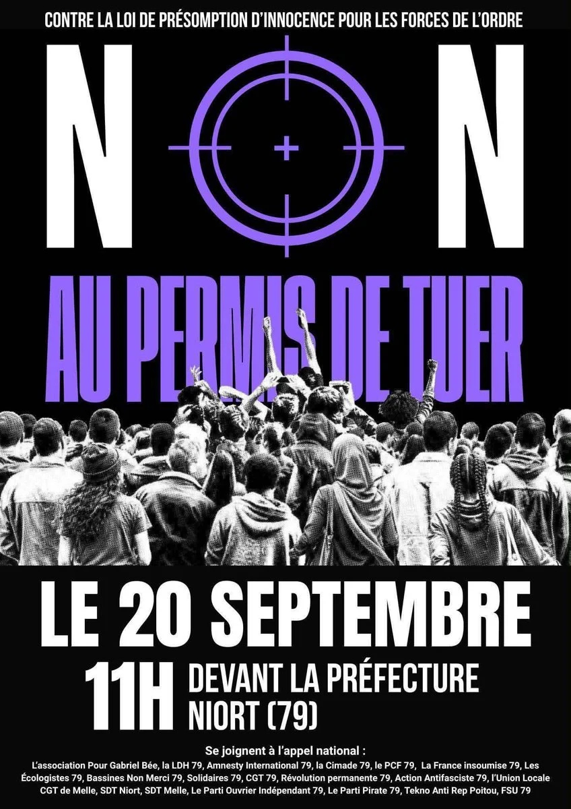

Publication sur X
20 septembre à Niort. Rassemblement contre le « permis de tuer »
Date de publication sur X · 16 septembre 2026
Repères éditoriaux
Nous avions rendez-vous à 11 h devant la préfecture de Niort, aux côtés des associations et des syndicats qui s’opposaient à la présomption de légitime défense pour les forces de l’ordre.
Texte de la publication sur X
Dimanche 20 septembre, 11h, devant la préfecture de Niort, le PCF 79 se joint à l'appel national contre le « permis de tuer », aux côtés de la LDH, d'Amnesty, de la Cimade et des syndicats.
Non à une loi qui présumerait légal tout tir des forces de l'ordre.
#Niort https://t.co/gfnxvcgpur

Sources
PCF 79 · @79Parti sur X · AR-0005-TW-2100282532633968876
À lire aussi · « Cercle de silence 167 ». La vidéo du rassemblement
Publications associées
- À Niort, appel à se rassembler le 20 septembre contre le « permis de tuer » · Version Facebook du même appel